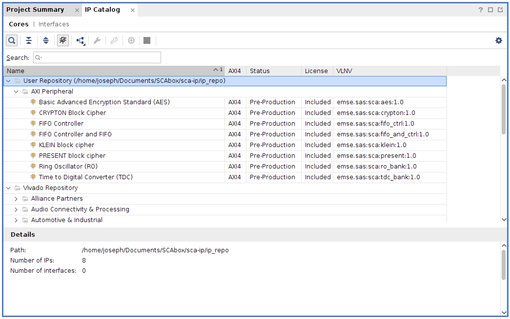

#2 - Install SCAbox#
Duration: 1-2 hours (more if you need to download the Xilinx tools)
Goals#
The goal of this installation tutorial is to setup the SCAbox framework.
This can be done in two steps :
Install the hardware and build the VHDL bitstream.
Install the software and build the C program.
At the end of this tutorial you will able to run your own synthetized and compiled version of the Tuto #1.
This tutorial is mandatory if you want to customize the framework by adding sensors, crypto-cores or use another development board.
Requirements#
A Xilinx Zynq-7000 SoC development board
A micro USB cable
Xilinx Vivado IDE
Xilinx Vitis SDK
Any terminal emulator such as PuTTY, TeraTerm or picocom
Tuto #0: Download the SCAbox Framework.
Note
Here’s the setup we used to create this tutorial: Linux 20.04, Digilent Zybo z7-10 board, Vivado 2020.1, Vitis 2020.1, Putty.
Emulator setup#
The terminal emulator allows to communicate via UART with the SoC. It must be configured properly in order to work and allow command typing. Bellow is given the emulator configuration used :
port is : /dev/ttyUSBx
flowcontrol : none
baudrate is : 921600
parity is : none
databits are : 8
stopbits are : 1
local echo is : yes
Note
If your terminal provide it, you can also use the local line edit.
Port name can vary according to your OS, eg. on windows its COMx
Tutorial#
The tutorial starts here !
Install the Hardware#
Goals:
Create the SCAbox block design from an empty new vivado project.
Generate the hardware specification file and bitstream.
1. Create a new RTL project#
Launch Vivado
Click on File > Project > New
Select project name (e.g “SCAbox”) and location
Choose RTL project
Do not add any sources/constraints
Select the part/board you are using (you can follow this digilent tutorial if your board reference does not appear)
Create the project
{kind=link}
2. Add the IP repository to the project#
Here we will add the IP repository to the project. The IP repo has been downloaded at the beginning of this tutorial.
Click on Flow Navigator > Project Manager > IP Catalog
Right click on Vivado Repository and select Add Repository
Select the your_path/SCAbox/SCAbox-ip/ip_repo folder
Once it is done the added IPs appear in the repository list:
{kind=link}
3. Create the block design#
Click on Flow Navigator > IP integrator > Create Block Design
Call it “SCAbox” and press OK
Now IPs can be added to the design
Press the + button and search for ZYNQ7 Processing System. double click to add it.
Press the + button and search for FIFO Controller and FIFO. double click to add it.
Press the + button and search for Time to Digital Converter (TDC). double click to add it.
Press the + button and search for Basic Advanced Encryption Standard (AES). double click to add it.
You should see the following IPs in your block design:
{kind=link}
4. Connect the IP cores#
Select Run Block Automation in the designer assistance (green message in the diagram view). Make sure apply board preset is checked and press ok

Double click on the ZYNQ7 processing system block and select Clock Configuration
In the PL Fabric clock arborescence check FCLK_CLK0 and set its frequency to 50MHz (AXI clock), check FCLK_CLK1 and set its frequency to 200MHz (sensor clock), check FCLK_CLK2 and set its frequency to 10MHz (target clock).

Still in the ZYNQ7 processing system block, select PS-PL Configuration
Set UART baud rate to 921600 and press Ok to save the configuration

Connect each clock signal according to the screenshot below.

Double click on the Time to Digital Converter IP block and set Depth to 8 (resolution), Count to 8 (number of sensor), Width to 32 (data width for storage).

connect TDC data_o[31:0] to FIFO data_i[31:0]
connect AES start_o to FIFO start_i
connect AES done_o to FIFO done_i
At this point, the design should look like this
{kind=link}
Select Run Connection Automation in the designer assistance (green message in the diagram view). Check All Automation and press OK
Vivado automatically adds interconnect and reset AXI blocks. The design is ready.
Save the design by pressing CTRL+S
{kind=link}
Generate the hardware#
At this point, few steps are required to have a working bitstream.
1. Generate a HDL wrapper#
Go into the Sources tab

Right click on SCAbox under Design Sources
Select Create a HDL wrapper
Let Vivado manage the wrapper
{kind=link}
Click on Flow Navigator > IP Integrator > Generate Block Design
Click on Generate to generate the wrapper
2. Configure manual sensors placement#
- note
We manually set the TDC sensor placement within the FPGA in order to obtain better side-channel results during the acquisition phase.
Go into the Design Runs tab

Right click on impl_1 and select Change Run Settings
Go to the Place Design section in the list
Change the tcl.pre property by clicking the browse button
Select new script and browse for the file your_path/SCAbox/SCAbox-demo/tcl/place.tcl
Avoid copying sources into the project and click Ok
3. Generate bitstream and specification#
Click on Flow Navigator > Program and Debug > Generate Bitstream
Wait for the synthesis, implementation and bitstream writing to finish

Note
The critical warning “The design failed to meet the timing requirements” is directly related to the TDC implementation. You must ignore it.
Click on File > Export > Export Hardware
Select Fixed
Select Include bitstream and click Ok
At this point Vivado must have created a .xsa file at the location you gave. This file will later be used by Vitis to generate a platform project that will handle all our hardware and drivers for the design we created.
{kind=link}
Note
If you are using Xilinx SDK instead of Vitis, you do not have a .xsa file but a .hdf file (hardware definition).
Install the Software#
If you completed the previous steps or if you are already provided with a BSP or a hardware specification you are now able to bind the hardware with the demo project.
1. Create a new system project#
Launch Vitis
Select your project path for the workspace and press Launch
{kind=link}
Quit the Welcome view
{kind=link}
2. Create a new platform project#
Click on File > New > Platform Project
Name your platform SCAbox and select Next
Browse for your .xsa file
Click on Finish to create the platform

Note
In Xilinx SDK just launch SDK from Vivado with the hardware project open and the platform project will be created.
3. Create a new application project#
Click on File > New > Application Project
Select the previously added platform, select Next

Name the project and let default values for other parameters. Then select Next

Ensure the standalone domain is selected, then select Next
Select the Empty Application (C) template, then select Finish
{kind=link}
Right click on the application project SCAboxAPP in the Explorer
Click on Import Sources
Add the .c and .h files from your_path/SCAbox/SCAbox-demo/src

Add the module folder from your_path/SCAbox/SCAbox-demo/modules
{kind=link}
4. Add includes to the project#
Again, right click on the SCAboxAPP project
Select C/C++ Build Settings
In the Settings tab go to ARM v7 gcc compiler > Directories
Add each directory in the src folder as Include Paths
If you correctly imported the includes you must have the following configuration :

Select Apply and Close
5. Exclude main files from build#
The project modules contain main files that need to be excluded from build to avoid multiple main declaration error.
Right click on the SCAboxApp/AES/main.c source in the arborescence and select properties.
In the properties window check Exclude resource from build and select Apply and Close
Right click on the SCAboxApp/cmd/main.c source in the arborescence and select properties.
In the properties window check Exclude resource from build and select Apply and Close
Right click on the SCAboxApp/tiny-AES-c/test.c source in the arborescence and select properties.
In the properties window check Exclude resource from build and select Apply and Close
{kind=link}
6. Generate a linker script#
It is likely that the default linker script will set the heap and stack size to smaller values than what is needed for the demo.
Right click on the application project SCAboxAPP
Select Generate linker script
Modify the Heap Size to 32KB
Modify the Stack Size to 32KB
Select Generate and overwrite the previous file

Launch the application#
1. Build the project#
In the vitis menu, select the Project menu and press Build All
If no error occurs the project is ready to be downloaded into the Zynq board.
2. Launch UART communication#
Plug your board and turn it ON
Ensure the mode register is set to JTAG (JP5 on Zybo)
Launch your terminal emulator
Configure a serial connection as shown above
Start a session with the emulator

Ensure local echo is on for the session.
{kind=link}
3. Run the application#
Right click on the application project SCAboxAPP
Click on Run As > Launch on Hardware
Switch to the terminal session
{kind=link}
Into the terminal type the command
tdcPress Enter
If everything went well, you should see an output similar to the following obtained with picocom :
{kind=link}
The value displayed by the command is the current sensors value. The last displayed line must be the one below, indicating that the SoC is ready to receive commands.
>
Conclusion#
In this tutorial you learned how to generate and build a the SCAbox framework. Through this tutorial, you built an equivalent application to the one presented in Tuto #1. You can use it to reproduce the CPA attack presented in Tuto #1.
The major difference with Tuto #1 is that you now have a fully built version of the framework that you can customize to your liking.
In the next tutorial Tuto #3, you will learn how to use the serial commands available from the serial prompt.
You can try to customize the IPs already present by right-clicking on it and select Customize IP. You can also change the IPs already present with different ones. To do this follow the Tuto #3.